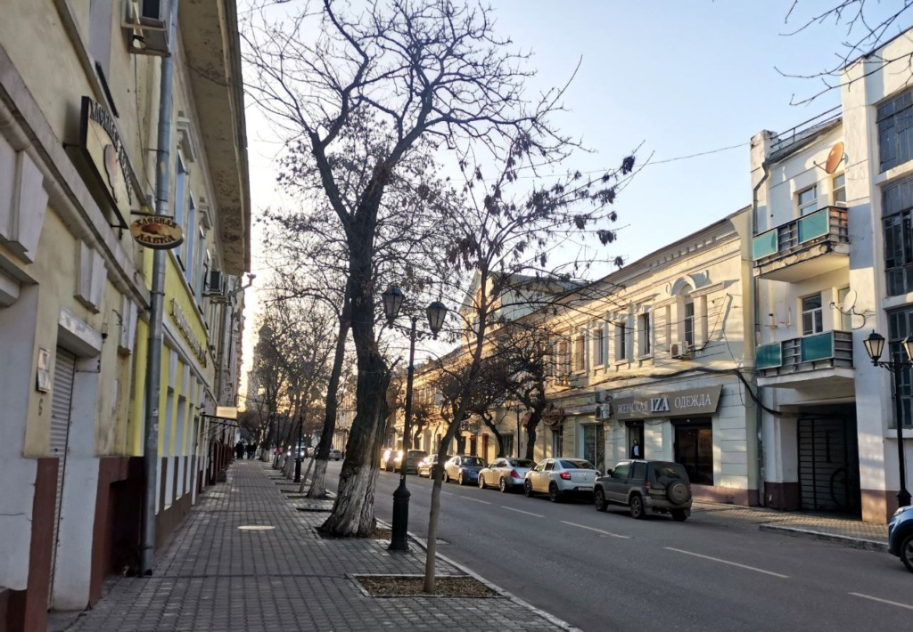
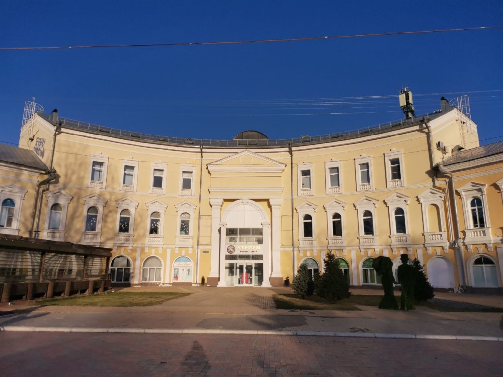

КАК ЖИВУТ СТАРИННЫЕ ДОМА В ЦЕНТРЕ АСТРАХАНИ


Инициатива по восстановлению скульптуры
Сегодня мы освещали инициативу, касающуюся восстановления скульптуры
китайца с зонтиком на воротах старинной усадьбы. Не все астраханцы
восприняли эту идею положительно. Действительно, в городе много
других проблем. Но как интересно иногда пройтись по центральным
улицам и погрузиться в атмосферу прошлого. Дела с исторической
застройкой в Астрахани обстоят не слишком хорошо, но некоторые дома
на удивление неплохо сохранились. А какие-то даже были аккуратно
отреставрированы. Особенно если учесть тот факт, что в областном
центре можно встретить постройки и конца XVIII века.
Прогулка в поисках раритетов XVIII века
Приглашаем вас на небольшую прогулку в поисках таких раритетов. Для
этого мы обратились к статье историка и депутата Олега Шеина для
сборника материалов Астраханских краеведческих чтений 2022 года.
Рассказывая о постройках XVIII века, исследователь ссылается на
Опись домовладений Астрахани, проведенная в 1805 года, карту
Астрахани 1801 года и Реестр ранее выявленных объектов культурного
наследия, сформированный Госдирекцией по охране ОКН.
Напомним, что в XVIII веке многие здания в Астрахани были уничтожены
грандиозным пожаром (и не одним). Пострадали сотни домов, в первую
очередь деревянных. Да и каменные сооружения тоже нередко быстро
ветшали. Причиной тому были, в числе прочего, ильмени и ерики.
Современная улица Ленина, например, называлась Мочаговской – то есть
Болотной. Мочага – сырое, болотистое место. Река Кутум также в
разлив поднималась до стен Белого города, а Коса только-только
выходила из-под воды. Все это создавало подмочку, влиявшую на
состояние фундаментов. Впрочем, такая проблема есть в городе и
сейчас, только к этому добавились канализационные разливы. Оживление
строительства началось в 1790‑е годы, стали возводиться каменные
постройки, часть которых можно увидеть и в настоящее время. В первую
очередь, конечно, обращают на себя внимание торговые подворья.
Торговля и торговые подворья
Астрахань находилась на пересечении торговых путей, была посредником
между Европой и Азией. Торговля была оживленной: в частности, через
Тюк-Караган (мыс на Каспии) отправлялся ежегодно в Хиву и Бухарию
один караван в 500 верблюдов, оттуда приходит один или два каравана
уже на 700 животных. Везли железные и чугунные изделия, олово,
квасцы, ткани, деревянные изделия, краску. А, к примеру, из Персии
получали «хлопчатую бумагу, пряденую и сырец», чернильные орешки,
кунжут, фрукты и прочее. В Каспийской столице сохранились четыре
торговых подворья – Персидское, Индийское, Армянское и Демидовское.
Там проживали и занимались торговлей приезжие купцы. На фото ниже
представлены три из них. Можно сказать, что состояние зданий по
астраханским меркам весьма приличное.